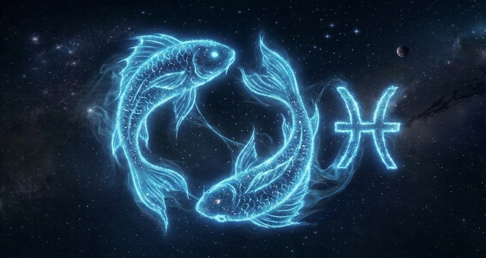

Peixes

O signo de Peixes é o décimo segundo e último do zodíaco e está associado à sensibilidade, imaginação e empatia.
Regido pelo planeta Netuno, Peixes tem forte ligação com os sonhos, a intuição e o mundo emocional.
Pessoas piscianas costumam ser gentis, compreensivas e muito intuitivas, tendo facilidade para se colocar no lugar dos outros.
Gostam de arte, espiritualidade e tudo que envolve emoções profundas.
Por outro lado, podem ser distraídas, indecisas e fugir da realidade em alguns momentos.
Peixes é um signo de elemento água, o que reforça sua sensibilidade, criatividade e forte conexão emocional. Em resumo, piscianos são conhecidos por sua empatia, imaginação e coração generoso.